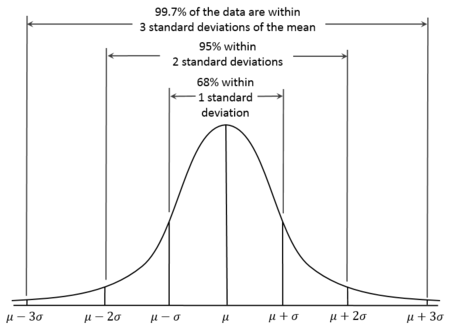

data_object_name %>%
ggplot(aes()) + # map two of the columns to x and y
geom_point() # you can change the size or colour of the points if you wish9. Unrelated-samples t-test and Power
Written by Tom Beesley & John Towse
Lectures
Watch Part 1
Watch Part 2
Watch Part 3
Watch Part 4
Download the lecture slides here
Reading
Pre-lab work: online tutorial
Online tutorial: You must make every attempt to complete this before the lab! To access the pre-lab tutorial click here (on campus, or VPN required)
Getting ready for the lab class
Create a folder for Week 9 and download the Week_9 csv file file and upload it into this new folder in RStudio Server.
RStudio tasks
Task 1 - Exploring the data
In this class we will be exploring some data on people’s estimations on aspects of the UK population. We asked people 4 different questions:
Out of every 100 people, about how many do you think are:
- Christian?
- Muslim?
- Over the age of 65?
We also asked a related question about immigration:
What percentage of the UK population do you think are immigrants to this country? (i.e. not born in UK)
Create a new R Markdown document for Week 9.
In the first chunk add
library(tidyverse)and create a new data object by usingread_csv()to read “data_wk9.csv”.You can view the data by clicking on it in the environment. Note that in previous weeks we’ve used the
view()command in our scripts (which does the same thing), but that can conflict with knitting the .Rmd file.Take a look at the summary statistics for all of the columns in our data using
summary(your_data_object_name)
To what extent are people’s estimations of these population parameters related? Let’s look at this by plotting these data as geom_point().
- Copy the following code. Edit it to map one of the numeric columns in the data to x and another numeric column to y. You can pick any of the columns you like, but it’s important that you understand what research question you are asking with your choice. For example, you might be asking “Do people who estimate that there are more Christians in the population also think there are more Muslims in the population?”
Consider the graph, noting any general pattern/trend in the data. Is there a postive relationship: do people who give high estimations for one variable tend to give high estimations for the other variable? Or is there a negative relationship: do people who give high estimations for one variable tend to give lower estimations for the other variable? Or is there no discernible relationship at all?
Write a statement after this code chunk to briefly make a comment about any pattern you see in the data (or absence of a pattern).
Copy this code into new chunks and explore relationships between the other numeric variables, each time noting the research question you are asking, and discussing with people on your table what kind of relationship you can see in the data. Write some comments in your R Markdown document to describe the patterns you are seeing.
Task 2 - Using z-scores to remove outliers
You may have noticed that there are some fairly extreme values in some of these numeric estimations of the population. As we’ve discussed in previous weeks, these outlier values can be problematic when we run our statistical tests, so (like last week) we probably want to control their influence by removing them. As you saw in your online tutorial, we can convert the data to z scores, and then remove z values above and below certain values.
Let’s create a “z-transform column” called z_imm for the estimates of the percentage of immigrants. Complete the code below by changing the data object names and adding the relevant variable (column) name. Note that you may want to assign the result (
<-) to a new data object at this point.
# use mutate and scale to create z-scores of immigration estimates
new_data_object_name <-
data_object_name %>%
mutate(z_imm = scale(column_name))
# N.B. the z_imm column has a slightly odd format after this calculation
# If you want, you can replace the last line here with this:
# mutate(z_imm = scale(column_name)[,1])
# ...but this isn't essential for the next steps- View the new data object to check this column has been created correctly. Like in the online tutorial, it would be a good idea to calculate some descriptive statistics for this new column to check it conforms to what we know about z-scores (e.g.,
mean()= 0, give or take some rounding, andsd()= 1).
# check the mean and sd of the new column
mean(data_object_name$column_name)
sd(data_object_name$column_name)- We know from our earlier lectures on the z distribution that values of greater than 2 (or less than -2) reflect around 5% of the distribution, and values greater than 3 (or less than -3) represent less than 1% of the distribution:

- Let’s consider an outlier any value that has a z of 2.5 (a conventional cutoff). Plot a histogram of the z_imm column in order to inspect whether there are data that are above 2.5 or below -2.5.
# histogram of the z_imm column
# eh, what, no code? Come on...you've got this!!!
# start with the data, pipe, then ggplot
# if you get really stuck, look back at last week- Add a filter command to remove the values in the z_imm column are greater than 2.5 or less than -2.5. That means you’ll need two separate statements with an & in the middle
# add a filter command
data_object_filtered <-
data_object_name %>%
filter(first_expression_here & second_expression_here) - You should have removed 1 row of data to make an object with 102 rows. Make a note of this in your R markdown document.
Task 4 - Power and effect size (d) calculations
We saw in last week’s lab tasks that there was a significant effect in our Stroop task data: participants were faster to say the colour names of the compatible list compared to the incompatible list (there were significant differences with the control list too). We will now use these data to calculate an effect size (Cohen’s d) for the t-statistic that we observed in that test.
Import the new stroop data csv file. We have reduced the data down to just the compatible and incompatible conditions.
Add the following code into a chunk and run it (edit the data object name) to calculate the
cohens_d()effect size, which is reported as effsize. You can ignore any negative sign, taking note of the absolute value.
library(effectsize)
library(pwr)
# add code here to read in the stroop csv file
compatible_condition <-
your_stroop_data_object %>% # rename
filter(condition == "compatible")
incompatible_condition <-
your_stroop_data_object %>% # rename
filter(condition == "incompatible")
cohens_d(x = compatible_condition$time,
y = incompatible_condition$time,
paired = TRUE)- We already know that this large effect size was significant with our large sample of participants. What might we have expected with a much smaller sample size? Copy the code below and use the
pwr.t.test()function to add in the effect size that you calculated (Cohen’s d) in step 3. We can set the N to 20. What power would we have achieved with this sample size, to detect this large effect? Discuss with your table, or staff, what this power means.
pwr.t.test(d = value_from_step_3, n = 20, type = "paired") #Q4Let’s say we wanted our next experiment to have an 80% chance of finding an effect at least as large as the one we found. Copy the code you used in step 4, and edit it to run
pwr.t.test()to work out the minimum sample size we would need to achieve power of .8, with the effect size you calculated in step 3.Let’s say we are looking to run a new experiment in which we give people a stressful task to complete simultaneously. We will ask them to put their hands in a bucket of ice cold water while doing the Stroop task (this is a real “stressor task” people use!). We are unsure of what consequence this will have for our effect size, but we want to estimate the effect size that could be detected in our experiment. We decide to run 40 participants, and want to achieve a power of .90 (90% chance to find an effect at least this large). Copy the
pwr-t-test()code and edit it to find the minimum effect size we could hope to detect under these conditions?
A note on saving your work
Scripts: By now you are hopefully getting used to editing and working within the R Markdown script. As you know, to save a script, you simply click the save icon, or press ctrl+S (cmd+s on a mac).
Plots: To save a graph you have produced, click the “Export” button in the plot window, then “Save as Image”. You can resize the graph and give it an appropriate filename. If you’ve set the working directory correctly, then the new file should appear in the current folder.
Data: The data objects you create (in the Environment) only exist within RStudio, and are temporary (with a script and the csv file, you can always redo the analysis). But what if you want to use the data elsewhere? For example you may want to share the data with your project (PEP?) supervisor. To do this, we need to write the data to a csv file (like those we use to import the data). You can do this with the following command: write_csv(the_data_object, "the_filename.csv").
Exporting from RStudio: The above save operations save files to a folder within RStudio Server. At some stage you will need to get these files out of RStudio Server, for example if you need a graph for your report, or you need to share the data or the scripts. Or maybe you want to make the csv file available to other researchers. To get files out of RStudio, simply select the files you want in the Files pane, click “More” and then “Export”. Selecting multiple files will produce a “.zip” file, which will need to be “unzipped” on your computer to access the individual files (instructions for Windows and instructions for Mac)
Week 9 Quiz
You can access a set of quiz questions related to this week here.